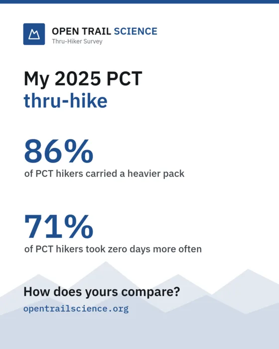

Crowdsourcing the Future of
Long-Distance Trail Science
Why do some hikers finish and others go home early? What's really behind injuries? There is surprisingly little data to be found! Open Trail Science aims to change this by providing survey data from long-distance hikers for everyone.
Be part of the first 50!
Once 50 hikers have shared their hike, this space shows the numbers on completion rates, base weights and pace. Until then, every single survey visibly moves the needle.
Ten minutes for you, years of answers for everyone
-
1
Tell us about your hike
Gear, pacing, training, rest days and how it ended. Don't remember a specific detail? Your experience is still highly appreciated!
-
2
See how you compare
As responses come in, we'll show you how your pack weight, pace and zero days stack up against other hikers on your trail, with a card you can share.
-
3
Help future hikers
Your answers, with identifying details blurred, join a free, open dataset that anyone can download, from hikers planning their first trail to researchers studying injuries.

Didn't finish?
Your hike matters just as much. Arguably more!
The hikes that stopped early are the ones that explain why hikes end. Section hikers and people who skipped large sections are welcome too. Keep your story ready.
Trails in the Survey
Click any trail to start your survey with it pre-selected
Pacific Crest Trail
Campo, CA to Manning Park, BC through desert, High Sierra granite passes, and Cascade volcanoes.
Appalachian Trail
Springer Mtn, GA to Mt Katahdin, ME across the ancient Appalachian range, green tunnels, and rocks.
Continental Divide Trail
Crazy Cook, NM to Waterton Lakes, MT. The crown of the continent, rugged navigation and altitude.
Colorado Trail
Denver to Durango across the Rocky Mountains, Collegiate Peaks, and San Juan wilderness.
Arizona Trail
Coronado National Memorial to Utah border across the Sonoran desert and Grand Canyon.
Tour du Mont Blanc
A loop around the Mont Blanc massif through France, Italy and Switzerland, over high alpine passes from hut to hut.
Te Araroa
The length of New Zealand, Cape Reinga to Bluff: beaches, forests, river crossings and the Southern Alps.
Other Long Trails
John Muir Trail, Pacific Northwest Trail, Long Trail, Hayduke, Camino de Santiago, West Highland Way, GR20, or one we haven't listed.
Lots of opinions, not much data.
Do low-cut shoes lead to more injuries? What's the optimized pack weight for maximal happiness? Everyone on trail has an answer, but hardly anyone has exact numbers. That's what this survey is for, and every hike gets us one step closer to some real answers!
Settle a few trail debates
Trail runners or boots? Stove or cold soak? Tent or tarp? With enough hikes we can see what actually goes along with finishing and what's just preference.
Room for machine learning
A big, clean dataset is what you need to train models, for example one that flags a high injury risk or one that optimizes your number of zero days for a minimal budget. That takes a lot of hikes tho!
Open to everyone
Every answer ends up in a free CSV and JSON download, with identifying details blurred, which anybody can use to continue their own ideas.
Hi, nice to meet you.
I'm 20, and currently working part time as an EMT. I recently hiked the Tour du Mont Blanc, which was a really cool experience. If all goes well, I'll be attempting a thru-hike of the PCT in 2027.
While planning for the PCT I of course watched all the mandatory indie-folk-infused journey videos, but I also really enjoyed looking at different statistics and surveys. These are great for answering how popular a specific trend is. I, however, also wanted to check for interesting correlations or try to model some predictions, and I could not find any large datasets to use.
So I built opentrailscience.org, which aims to provide datasets for any long-distance trail. I never ask for your name or an annoying sign-up, and I blur the data a bit to prevent pinpointing a specific hiker, then publish every answer as an open dataset that anyone can download and play around with.
This is a one-person project, not a company. If you have any suggestions or questions, don't hesitate! hello@opentrailscience.org
How I handle your data
Open Trail Science publishes every survey answer as an open dataset. That only works if nobody can pick out the people who answered, so this page explains what I ask, what I store and why.
Last updated 17 October 2026 • consent version 2
The short version
- ✓No names, emails, accounts, cookies or tracking.
- ✓Before anything is saved, I blur the details that could point to you: dates become weeks, your age becomes a range and you only submit a world region.
- ✓What I store about your hike is exactly what I publish. There is no hidden, more detailed copy, so there is nothing that could be leaked.
- ✓The optional feedback box at the end isn't connected to your survey entry and isn't part of the released dataset.
- ✓Some answers are health information, so I ask for your consent before the survey, and only adults (18+) can take part.
- ✓You get a personal code, so you can see how your hike compares later on, you can also choose to delete your answer in case you change your mind later.
- !The website and database are hosted in the USA, and the open dataset can be downloaded by anyone, anywhere.
What you tell me and what I store
Some questions need a precise answer for calculations (your pace, for example). The server works those out, then throws the precise answers away and only keeps the blurred version.
| You answer | I store and publish | Why |
|---|---|---|
| Start and end date 18 Apr – 22 Sep 2025 | Calendar weeks and months, number of days 2025-W16 to 2025-W39, 158 days | Exact dates are the easiest way to recognise someone. Weeks still show the season. |
| Dates and distance on a small trail | Months only, distance to the nearest 10 mi, days rounded to whole weeks | Few people hike these trails, so even a week could point to you. |
| Age at the start of the hike 29 | 5-year range (everyone 20 or younger shares one) 25–29 | An exact age plus dates narrows things down a lot. |
| Where you live | A world region Western Europe | I never ask for your country, only a region. |
| Injuries, illness, prior injuries, deadline | The categories you picked from a list | Free text can accidentally contain names, places or other people's details, so there is none. |
| Height, weight, what you spent on the trail and on gear (in USD or EUR), visa, gear, food, painkillers, mileage, zero days, ratings | As you entered them | These are what the research is about, and on their own they don't reveal who you are. |
| "Don't know" | An empty value and a note that you didn't know | So researchers can tell "didn't know" from "didn't apply". |
| How long the survey took you | A rough range 10–20 minutes | Helps researchers spot rushed answers. It's a duration, not a date or time. |
| When you submitted | Not stored | Nobody needs it, and a timestamp is just another clue. |
| Feedback (optional, after submitting) | Your message only, not part of the dataset | It only helps me improve the survey, so it isn't connected to your survey entry. Deleted after at most 12 months. See below. |
Why blurring matters
Imagine a trail bad actor knows that you started a specific trail in the first days of July 2025, that you're 24 and that you're from the Netherlands. If the dataset listed exact dates, ages and countries, they might find your row and see your injuries, weight and budget. That's exactly what I want to avoid. With weeks, age ranges and regions, your row looks just like the rows of many other hikers, so it's hard to tell which one is yours.
How much blurring is enough depends on how many people hike a trail:
The busiest trails in the survey, where most hikers start in the same few weeks of the season, so a start week is usually shared with many others.
Fewer hikers, so I use months and round the distance to 10 mi and the days to whole weeks.
No method is perfect: someone who already knows a lot about your hike might still guess which row is yours. Blurring makes that guess unreliable, and that's also why I ask for your consent before you start.
What I never collect
- Names, email addresses or phone numbers
- Your exact age or date of birth
- Your country or city
- Free-text answers
- Accounts or passwords
- Cookies, analytics or advertising trackers
- IP addresses in survey records
- Exact dates or submission times
Technical data while you visit
- Web hosting
- Like every website, my host (Netlify) needs your IP address to deliver the pages to your browser and keeps it in its server logs. According to Netlify's data processing agreement, it keeps its logs online for 90 days and offline for one year. I don't use these logs for anything.
- Spam protection
- To keep out bots and spam, I keep a scrambled version of your IP address (hashed) for one hour when you submit. That allows at most 10 submissions per hour. It is deleted automatically after the hour and never linked to your answers. The same applies to deletion attempts, code lookups and feedback messages. On top of that, you answer a small trail question before the survey starts, and when you submit, your browser solves a short calculation (about a second). Both only prove that you're not a bot, run without any third party and aren't stored.
- Your browser
- While you fill in the survey, your answers are saved in your own browser (only local storage), so a reload doesn't lose them. They stay on your device and are only sent when you submit. The draft is deleted when you submit, when you press "Start over" or after 14 days. If you switch between light and dark mode, your browser also remembers that choice. You can of course clear all of this in your browser's site data settings. None of it is a cookie, and none of it is sent anywhere or used for tracking.
- Fonts
- The fonts come straight from this website, not from a third party like Google Fonts.
Feedback about the survey
At the very end you can tell me how to improve the survey. Your feedback isn't connected to your survey entry and isn't part of the released dataset, it's saved on its own and only I read it. All feedback messages are deleted once a year, on 1 January.
How long I keep your data
- Survey answers: I keep your answers for as long as the project and the open dataset exist, or until you delete them with your personal code.
- Feedback: Feedback messages are deleted after at most 12 months.
- Server logs: Netlify keeps its logs online for 90 days and offline for one year (Netlify's data processing agreement).
- Spam protection: the scrambled IP address is deleted after one hour.
- Your draft: stays in your own browser and is deleted when you submit, press "Start over" or after 14 days.
Where your data is stored
- Netlify, Inc. (USA): hosts the website and runs the code that checks and saves your answers.
- MongoDB, Inc. (MongoDB Atlas, USA): stores the blurred answers and, separately, the feedback messages.
- The open dataset: the same blurred answers, downloadable by anyone worldwide under the CC0 public domain dedication.
Both providers are US companies, and I have data processing agreements with both of them. The stored survey answers, including health information, are blurred but not anonymous, and they are stored in the USA.
My reasons for using your data
Data protection rules say I need a good reason for everything I do with your data. These are mine:
- Survey answers, including health information: only because you agree to it before the survey starts. Without your agreement nothing is stored.
- Feedback: only if you decide to send a message.
- Server logs and the spam check: the website can't run safely or keep bots out without them.
- The draft and the light/dark setting in your browser: they only exist so these features work for you.
Deleting your answers
After submitting, you got a personal code like 7K3Q-M9XD-2WPA-HV4T. Enter it here to delete your hike:
- Your answers are deleted from the database immediately and disappear from the website and the download files with the next dataset update (usually within a day).
- Copies that someone already downloaded can't be recalled. That's simply the nature of open data, and exactly why I blur everything before it's saved.
- Lost your code? Then I can't find your answers, because I don't know who you are. That's by design.
- The same code also shows your hike and how it compares today (on the Insights page). Keep it to yourself: anyone with the code can delete your answers.
Your rights
You can see your answers, correct them and delete them, and you can withdraw your consent at any time (withdrawing doesn't affect copies that were downloaded before). Seeing and deleting work with your personal code, to correct an answer, delete your hike and fill in the survey again, or write to me. Because the stored answers contain nothing like your name, I can't tell which record is yours, your personal code is how you can prove it.
Who is responsible
Open Trail Science is a one-person, non-commercial project (that's me, see About the creator). For any privacy question or request, just write to:
The whole site is open source, so you don't have to take my word for any of this: the code that checks, blurs, stores and publishes your answers is on GitHub.
If this page ever changes in a way that affects how answers are stored, the consent version above changes too, and every record keeps the version its author agreed to.
What the data says so far
A first look at the open dataset. These are self-reported answers, not a controlled study.
Charts unlock at 50 hikers
With fewer hikes, any chart would mostly show noise. Help us get there.
Groups with fewer than 5 hikers are left out. Every chart has a table view for exact numbers.
Some correlations we found
Shared your hike already?
Enter your personal code from the thank-you page to see how your hike compares today, with everyone who has answered since.
What happens with your answers
- 1The survey takes about 10 minutes. I never ask for your name, email or an account.
- 2Your answers are published as an open dataset that anyone can download. That's the whole point of the project: free data for hikers and researchers.
- 3Before anything is saved, I blur the details that could point to you: dates become calendar weeks (months on small trails), your age becomes a 5-year range (everyone 20 or younger shares one) and you only enter a world region. There are no free-text answers. That makes your row hard to pick out, but it's blurred, not anonymous.
- 4Some answers are health information (injuries, illness, painkiller use, body weight). Please only take part if you're comfortable with them being published this way.
- 5After submitting you get a personal code: come back with it to see how your hike compares as more hikers join, or to remove your answers from the dataset in case you change your mind later. Copies that others already downloaded can't be recalled, though.
The full details: How I handle your data.
So we know you're a hiker and not a bot: which of these would a thru-hiker leave at home?
Thank You for Advancing Trail Science!
Your hike is now part of the open dataset, thank you! Every single answer makes the picture of what really happens on long trails a little clearer, for future hikers and for anyone researching it.
Show all my answers
Exactly what is stored and published for this hike, after blurring.
Come back later and see how you compare
Every new hike makes the comparison more accurate. Enter this code on the Insights page anytime to see how your hike stacks up today, with a fresh share card.
It's also the only way to delete your answer in case you change your mind later (on the privacy page). I don't know who you are, so I can't look it up for you: please save it somewhere safe.
Was a question confusing, missing or just annoying? Tell me! This box is optional. It isn't connected to your survey entry and isn't part of the released dataset.
Please don't include your name or personal or health details.
Open Thru-Hiker Survey Dataset
Every answer from the survey, checked, documented and with identifying details blurred. Free to use for statistics, machine learning or just playing around with the numbers.
CC0 public domain • schema documented below
Full Dataset (.CSV)
A flat table that opens in Excel, Google Sheets, R or pandas: one row per hike, one column per field.
;Full Dataset (.JSON)
The same hikes and fields as the CSV, with types kept: numbers, true/false and real lists. Easiest to use from JavaScript or Python.
Data Preview
Have a quick look at the real entries right here in your browser. It updates whenever the dataset is rebuilt.
| Trail | Year | Direction | Base Wt | Pace | Backpack | Cook Sys | Pad | Status | Injury | Enjoyment |
|---|---|---|---|---|---|---|---|---|---|---|
| Loading dataset preview... | ||||||||||
Cite this dataset
It's public domain (CC0), so you don't need my permission, but a citation really helps others find the data. The dataset keeps growing, so the citation names the schema version and the date you got the files. It shows today's date, so change it if you downloaded them earlier.
Open Trail Science. (2026). Open Thru-Hiker Survey Dataset [Data set]. https://opentrailscience.org/#downloadQuickstart for Researchers
Copy, run, and you've got a first model. The script downloads the data once, then reads it from disk, and handles missing values the right way.
from pathlib import Path
from urllib.request import urlretrieve
import pandas as pd
import statsmodels.formula.api as smf
# Downloaded once, then read from disk. Delete the file to get the newest data.
DATA = Path("thru_hiker_survey_dataset.csv")
if not DATA.exists():
urlretrieve("https://opentrailscience.org/data/thru_hiker_survey_dataset.csv", DATA)
df = pd.read_csv(DATA)
print(len(df), "hikes")
# Lists are ';'-separated. A null value listed in unknownAnswers means
# "Don't know"; a null that is not listed means the question did not apply.
for col in ["injuryLocations", "illnessTypes", "priorInjuryAreas", "deadlineReasons", "unknownAnswers"]:
df[col] = df[col].fillna("").str.split(";").apply(lambda xs: [x for x in xs if x])
# Dates are coarsened: startMonth for every hike, startWeek on popular trails.
df["startMonth"] = pd.PeriodIndex(df["startMonth"], freq="M")
# Finished = every mile hiked (continuous or flip-flop). Section hikes are left out.
hikes = df[df["completionStatus"] != "section_hike"].copy()
hikes["finished"] = hikes["completionStatus"].isin(["continuous_purist", "flip_flop"]).astype(int)
model = smf.logit(
"finished ~ baseWeightLbs + week1DailyMiles + preTrailFitnessRating + C(priorExperience)",
data=hikes.dropna(subset=["baseWeightLbs", "week1DailyMiles", "preTrailFitnessRating"]),
).fit()
print(model.summary())Data Dictionary
Every column in file order, generated from the same schema that checks each submission.
- Numbers are stored in imperial units; columns ending in
Kg,Cm,KmorMrepeat them in metric. nullmeans the question did not apply, unless the column is listed inunknownAnswers, which means the hiker answered "Don't know".- Derived columns are computed on the server and never asked.
| Column | Type | Values / Units | Role | Notes |
|---|
About This Data
How the data was collected, and what to keep in mind when you analyse it.
- Collection
- An online survey for adults (18 or older when answering) who have hiked a long-distance trail, shared through hiking communities. The hike itself may be from before they turned 18, so the "20-and-under" age band can include hikes by minors. I ask for consent before the survey starts, and there are no names, emails or accounts. Each record is one hike.
- Validation
- The same schema checks every answer, both in the browser and on the server: ranges, allowed values, dates in the right order and not in the future, ramp-up weeks that match the dates, and a pace below 100 mi/day. Every question has to be answered or explicitly marked "Don't know".
- Missing values
- No silent defaults: choice cards, sliders and yes/no questions all start unanswered. Missing numbers are null, never 0. Check
unknownAnswersto tell "Don't know" from "not applicable". - Known biases
- People decide themselves whether to take part (self-selection), and everyone answers after their hike, from memory (recall bias;
monthsSinceTraillets you control for it). Finishers are probably over-represented, which is why I really encourage people who went home early to answer too. - Privacy protection
- Anything that could help identify someone (quasi-identifiers) is generalised before it's stored, so the database is exactly the public file: ISO weeks instead of dates (months, 10-mi distances and whole-week durations on small trails, see
datePrecision), 5-year age bands (one band for 20 and under) for the age at the start of the hike, world regions instead of countries, no submission timestamp and no free text. Derived values are computed from the exact answers first, then the exact answers are discarded. Rows are ordered by trail, year and start month (random within a group), never by submission order. - Spam and test data
- Bots are filtered out by honeypot fields, a minimum completion time, a short trail question, a small proof of work in the browser and a per-network rate limit. Synthetic records I use for development never end up in the public files.
- Source code
- Everything behind this dataset is open source on GitHub: the survey, the schema that validates every answer, the blurring and the export.
- Updates and license
- The CSV and JSON files are rebuilt after every 5 new or deleted answers (at most every 6 hours), and overnight if anything is still pending. Public domain under CC0 1.0. Every record keeps the
schemaVersionit was collected under.